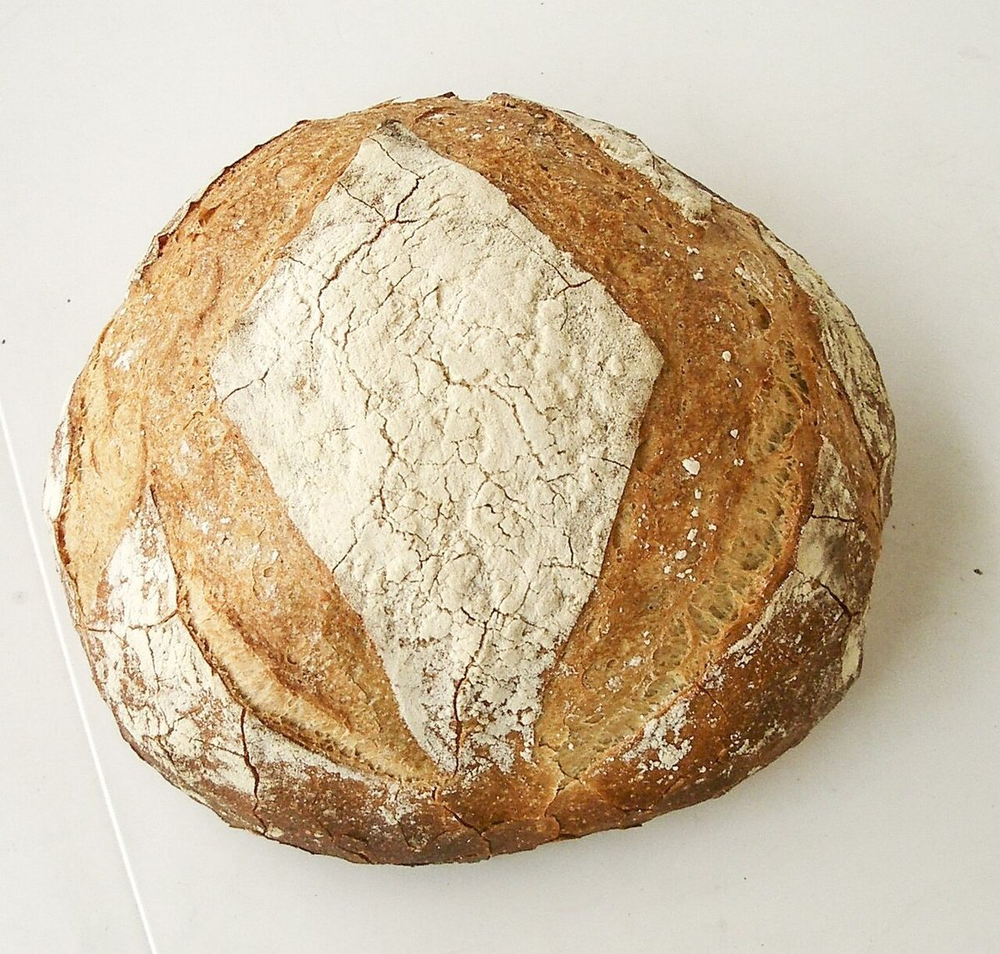
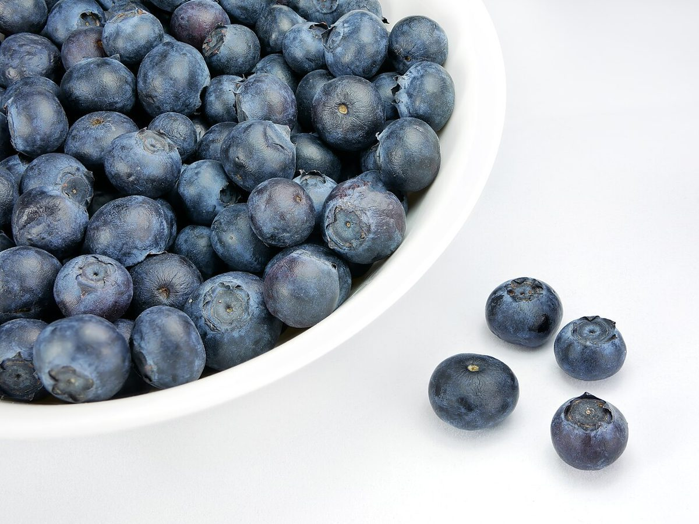

2
包み紙
店のこと
お店について確認できているのは、所在地とInstagramのアカウントだけです。
このページの「想像してみる」部分は、制作側が想像して書いたものです。お店の実際の様子・考え・メニューとは関係がありません。
確認できていること
- 店名は「手作り工房 Caro（カーロ）」、業種は焼き菓子・パン
- 所在地は群馬県渋川市渋川4461-3(〒377-0008)
- 電話番号はなし。連絡はInstagramから
- 営業時間・定休日・メニュー・価格・ご予約・駐車場は準備中

想
撮影地不明のイメージ 撮影地不明のイメージ 撮影地不明のイメージ
想像してみる
包み紙を開くところ
店名の由来は分かりません。制作側は、箱を開ける前のわくわくした気持ちを、焼き菓子やパンの店という業種から想像しました。お店の実際の姿ではありません。

